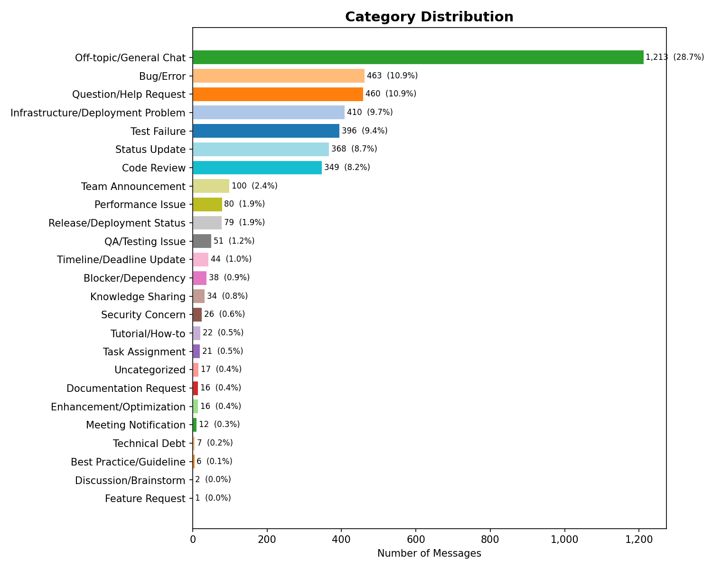
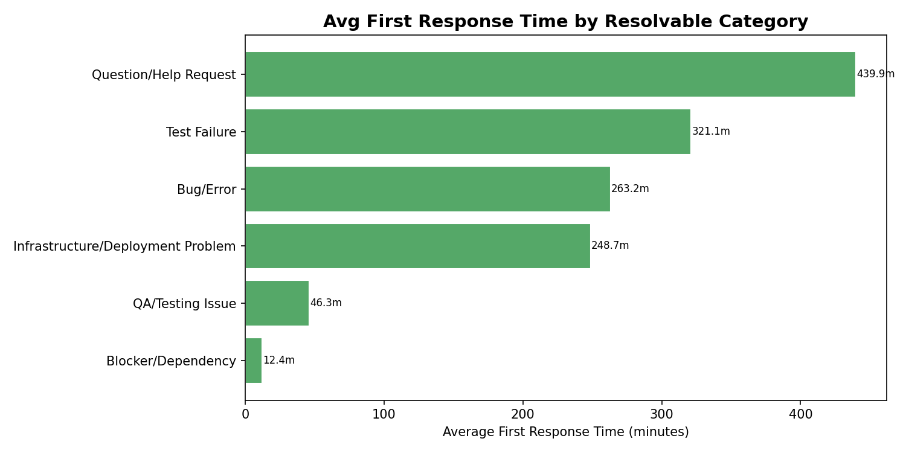
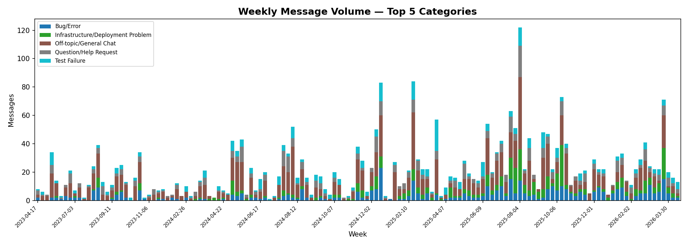
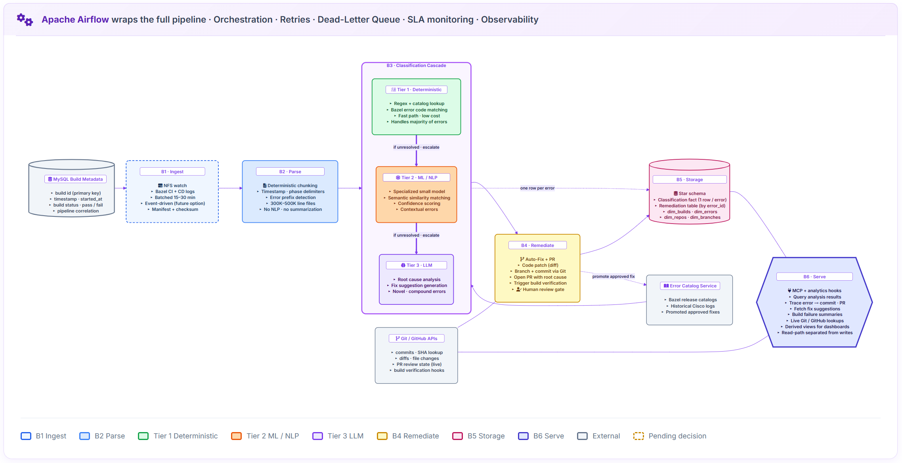

Discovery findings, proposed architecture, and decisions needed. Covering April 10 through April 16.
Since the April 10 meeting, the team has focused on three areas that all feed the same overarching goal: building an AI system that helps engineers understand where their PR is stuck in the pipeline and how to unblock it. This document covers what was learned, what was built, and what decisions are needed to move forward.
The team scraped and categorized messages from the NxOS CI workflow WebEx space. The dataset spans approximately three years (April 2023 through March 2026) and contains over 4,200 messages across 25 categories, of which approximately 3,000 are actionable technical and operational threads.
| Category | Messages | % of Total |
|---|---|---|
| Bug/Error | 463 | 10.9% |
| Question/Help Request | 460 | 10.9% |
| Infrastructure/Deployment Problem | 410 | 9.7% |
| Test Failure | 396 | 9.4% |
| Code Review | 349 | 8.2% |

Distribution of 4,200+ categorized messages from the NxOS CI workflow WebEx space (April 2023 through March 2026)
For resolvable issue categories, the team measured average first response time and what percentage of threads received any reply.
| Category | Avg Response | Median | Response Coverage |
|---|---|---|---|
| Blocker/Dependency | 12 min | 7 min | 44% |
| QA/Testing Issue | 46 min | 5 min | 39% |
| Infrastructure/Deployment | 249 min (~4 hrs) | 20 min | 61% |
| Bug/Error | 263 min (~4.4 hrs) | 51 min | 49% |
| Test Failure | 321 min (~5.4 hrs) | 44 min | 46% |
| Question/Help Request | 440 min (~7.3 hrs) | 13 min | 34% |

Average first response time across resolvable issue categories, measured from initial post to first reply
Weekly message volume across the top five categories shows a clear growth pattern over nearly three years.

Weekly message volume for the top five issue categories, April 2023 through March 2026. Volume has roughly tripled over this period.
Question/Help Request is the highest-volume category (tied with Bug/Error), yet only 34% of threads receive any reply. Engineers are asking for help and receiving silence.
Bug/Error and Test Failure threads average 4 to 5 hours before a first response. At the 90th percentile, engineers wait over 10 hours.
When an issue is specifically flagged as a blocker, the average first response time drops to 12 minutes (based on a small sample of 9 threads, but the pattern is consistent). The organization responds when urgency is communicated. The gap is in identifying what should be escalated.
Weekly message volume has grown from 20 to 40 messages per week in 2023 to 60 to 120 in 2026. The manual triage approach is not scaling with the growing engineering organization.
This data suggests the highest-impact first target for AI-driven triage is the Question/Help Request category: high volume, lowest response coverage, and longest average wait. An automated system that can surface relevant documentation, link to known solutions, or route questions to the right person would address the single largest gap in the current workflow.
The team gained hands-on access to the build log system through working sessions on April 8 and April 9. The following was verified through direct observation and discussion with the build infrastructure team.
Two build systems are in use: Gmake (nx_main branch, legacy, being phased out) and Bazel (nx_dev branch, current focus). Both produce CI builds (developer PRs) and CD builds (official nightly). CI and CD builds have different NFS paths, different log formats, and different retention policies.
| Attribute | CI Builds | CD Builds |
|---|---|---|
| NFS path pattern | /auto/paw-sjc-scratch/paw-logs/{uuid}/... |
/auto/ins-bld-tools/branches/{branch}/nexus/logs/{tag} |
| Path discovery | UUID extracted from PR metadata | Predictable from branch + build tag |
| Retention (success) | Deleted at PR merge | 2 weeks |
| Retention (failure) | 3 to 5 days | 5 years |
| Triage entry point | No build_log.html | build_log.html available |
Build metadata (build number, status, timestamps) is stored in MySQL. Logs are stored separately on NFS in a flat directory structure with 40 or more individual log files per build. The 13 distinct Bazel error log types are organized per image and stage (nxos64, nxos64_msx, linecardimages, core_64_n9000, and others).
The team reviewed the existing build repair automation pipeline (PR #642 on DCN/tools) at the code level. The pipeline consists of 7 components:
| Limitation | Detail |
|---|---|
| Incomplete context extraction | Error extraction captures only a subset of available context. The mtime-based file selection and backward scan that stops at ARCH lines miss relevant information. |
| No persistence across runs | Analysis results are not preserved. Workspace files are overwritten each attempt, with no traceability from a fix back to the root cause that motivated it. |
| Gmake inefficiency | The Gmake path rebuilds all targets on every retry. The Bazel path correctly tracks remaining failures only. |
| Fragile configuration | Hard-coded absolute paths throughout the codebase make the pipeline fragile to infrastructure changes. |
| Unused parameters | The error_output parameter is accepted but never passed to the Codex prompt, leaving available context on the table. |
The Bazel workflow is the more mature path and serves as the better foundation for improvement. The proposed architecture (Section 03) builds on this assessment.
Based on the current-state review and the technical understanding gained through hands-on sessions, the team has drafted a proposed end-to-end architecture for the build log analysis system. This is initial thinking, and several decisions remain pending.

Simplest first, always. Deterministic regex (nanoseconds) precedes ML (tens of ms) precedes LLM (seconds + dollars). The inverted-pyramid cascade is mutually exclusive: each error is caught at exactly one tier. The bulk falls out at Tier 1; the remainder falls through to Tier 2; only novel or compound errors reach the LLM.
Reads Bazel CI and CD logs from the NFS mount. Recommended start: scheduled batches every 15–30 minutes to match current build cadence — simpler and predictable. Event-driven mode (filesystem watcher or webhook) is retained as a future option once queue patterns and SLA targets are confirmed. Manifest plus checksum on each batch for idempotency.
Deterministic chunking only. Bazel logs have structural markers (timestamps, phase delimiters, error prefixes) that allow the pipeline to segment 300K–500K line files without NLP. NLP summarization is not performed here; it belongs inside the LLM tier and runs only when the LLM is actually invoked. This preserves the tiering cost gradient — cheap operations upstream, expensive operations only when needed.
Every error enters Tier 1. Tier 1 (deterministic, regex plus catalog lookup) handles the bulk of errors at negligible cost. Unresolved errors escalate to Tier 2 (specialized ML model, semantic similarity, confidence scoring). Errors Tier 2 cannot classify escalate to Tier 3 (LLM, root cause analysis, fix suggestion). Each error is caught at exactly one tier; there is no situation where multiple tiers write for the same error.
Consumes classification and context from whichever tier caught the error. Generates a code patch, branches and commits via Git, opens a pull request with root cause plus proposed fix, and triggers build verification. A human review gate on the PR is mandatory — no auto-merge. PR outcome (merged / rejected / build pass) flows back to B5 for traceability and feeds the feedback loop into the Error Catalog Service.
Star schema across two related tables. The classification fact table holds one row per error, written by whichever tier caught it. The remediation table is keyed by error_id and written by B4, joined to classification at read time. Dimensions: dim_builds, dim_errors, dim_repos, dim_branches, dim_log_files. Full commit diffs and PR comments are queried live, not persisted.
Exposes the schema via MCP tools for downstream agents and users: query analysis results, trace errors to commits and PRs, fetch fix suggestions, and correlate with live Git / GitHub state. Analytics and alerting hooks attach at this layer without touching the fact table directly — MCP reads from derived views, keeping the write-path and read-path cleanly separated.
Replaces the brittle Bazel docs scraper. Sourced from Bazel release catalogs (version-locked, refreshed on Bazel upgrade — low frequency at Cisco) and historical Cisco build logs (what they actually hit). Grows via the feedback loop: every approved B4 fix is promoted into the catalog so the next occurrence of that error hits the cheap Tier 1 path. Catalog construction effort is scoped as a sub-project, not a flag to flip.
Airflow wraps the full pipeline end-to-end. Gives DAG topology, task retries with exponential backoff, dead-letter queue behavior on persistent failures, SLA monitoring, and observability hooks (logs, metrics, alerts) for every stage. Cisco already uses Airflow operationally, so orchestration and telemetry adopt the existing standard rather than introducing a new one.
Batched polling versus event-driven/realtime for B1. The answer depends on build cadence patterns and latency requirements.
The Error Catalog Service is a sub-project. Construction effort from Bazel release catalogs and historical Cisco logs needs to be scoped before Tier 1 coverage targets can be set.
Availability of labeled datasets for the Tier 2 ML model. Without labeled data, the team would need to use pre-trained models or unsupervised approaches.
Whether CI and CD logs flow through the same pipeline with a flag or require separate ingestion paths. Affects B1 and B2 design.
The team built and deployed two capabilities for WebEx integration: a chat scraping tool and a meeting recording extraction tool. Both are operational and have been validated against live data.
A working WebEx scraper was built and deployed into the team's own WebEx space. It captures full message history with structured fields (timestamp, author, email, bot flag, text, files, thread parent), stores to PostgreSQL, and supports per-room scoping and deduplication.
The NxOS CI workflow channel analysis presented in Section 01 was performed using this capability.
A working extraction tool was built that retrieves transcripts, summaries, action items, and audio from WebEx meetings via the API.
Key constraint discovered: The WebEx API restricts recording and transcript access to meeting owners. A regular attendee cannot extract these artifacts via API.
For meetings where the team is the organizer, the API path works as expected. For broader automation across the organization, either admin-scoped tokens or an alternative approach (such as audio-file-based transcription) would be needed. This constraint affects the automation architecture for meeting recording extraction at scale.
Based on the discovery work above, the team has drafted a proposed architecture for a unified WebEx intelligence platform. The design separates concerns into modular layers so that new data sources (email, GitHub, Jira) can be added without touching downstream components, and the agentic application layer can be swapped per use case.
| Component | Input | Output | Status |
|---|---|---|---|
| Pulse (scraper) | WebEx spaces | Database | Not deployed in NxOS. Service app status unknown. |
| Scribble (transcriber) | Audio files | Text output | Local only. No database integration. |
| Wall-E bot (BayOne) | WebEx spaces (webhook) | PostgreSQL | Code on local machine (currently down). Not deployed. |
The architecture is designed for modularity: new data sources can be added without touching downstream layers, the agentic application can be swapped for a different use case while keeping the same database and MCP server, and multiple connectors can feed the same database in parallel. If Pulse is already a deployed service app, the ingestion layer can be skipped entirely by wiring the MCP directly onto its existing database output.
Two areas of scope overlap have surfaced that require clarification before the team can commit to architecture decisions. Both involve existing work at Cisco that may intersect with the current assignments.
The team discovered Rui Guo's Nexus T agent in the NxOS CI workflow WebEx space. It uses GPT-based analysis for auto-triage of build failures, includes topology views, and has a conversational interface. This directly relates to the build log analysis work assigned to our team, and it also overlaps with Justin Joseph's existing Python and Codex automation (reviewed in Section 02).
There are now three separate efforts touching build failure analysis: Rui's Nexus T agent, Justin's automation pipeline, and the work assigned to our team. We would like to understand how these relate to each other so we can focus our effort where it adds the most value. Specifically:
We are continuing with architecture design and discovery in the meantime and are ready to adjust direction once this is clarified.
The team was originally directed to evaluate Naga's Pulse (WebEx scraper) and Scribble (audio transcriber) tools and build on them. The team has been attempting to get access to these repositories since April 9. Despite multiple outreach attempts, Naga has been difficult to reach. When the team was finally able to connect with him in person on April 16, Naga indicated that the current expectation from Srinivas is to work on the CI/CD pipeline and interact with WebEx, and that this is different from what was originally discussed for Pulse and Scribble. He recommended syncing with Srinivas again to confirm the direction.
The team would appreciate clarity on the following:
Both of these are about making sure we are pointed in the right direction. The team is ready to move quickly once the boundaries are confirmed and can adapt to whatever direction makes the most sense for the project.
Beyond the scope alignment items above, the following technical questions require direction before the team can finalize design decisions.
The team has built both a chat scraper and a meeting recording extractor. Should the focus remain on the NxOS CI workflow channel specifically, or should this be generalized for the broader set of WebEx spaces?
For the build log analysis pipeline, when AI generates a fix: should the system comment on the existing PR, open a new PR with the fix, or notify via another channel? The current workflow uses email. The proposed architecture includes a PR-based approach with human review.
The proposed architecture includes a Tier 2 ML model for error classification. Does the team have access to labeled datasets of past build errors and their resolutions? If not, should Tier 2 initially use pre-trained models or unsupervised approaches?
For CI builds (where developers are waiting), is near-realtime processing expected? For CD nightly builds, is batch processing on a 15 to 30 minute cycle acceptable?
Three access items remain outstanding. Each has been requested previously and requires action from the Cisco side to resolve.
| Item | First Requested | Current Status | What Is Needed |
|---|---|---|---|
| DeepSight platform access | ~4 weeks ago | No access | Direct grant from platform owner |
| Pulse/Scribble repository access | April 9 | Repo links not yet provided. Naming confusion between "Scribble" and "Scrubber" in GitHub. | Direction to the repo owner to share exact links and grant access |
| Permanent ADS machine | April 3 (tenant), April 11 (bundle) | Tenant approved but not reflected in portal. Bundle (CN-SJC-STANDALONE) is sequential and can only be added after ADS machine is provisioned. | Follow-up on the tenant portal issue per guidance provided on April 16 |
The team has temporary ADS access (4-week lease, RHEL8) which enables current work, but permanent access is needed for sustained development. All environment setup and tooling configuration done on temporary machines would need to be repeated every 4 weeks.
The following are available as separate files if deeper review is desired.
| Material | Description |
|---|---|
| Current-state architecture diagram | Interactive HTML showing the existing 7-component build repair pipeline with annotated limitations (expandable detail per component) |
| NxOS CI workflow analysis (full dataset) | CSV with categorized messages, response times, and thread structure |
| Log type mapping | Complete catalog of all 13 Bazel error log types with CI/CD differentiation, NFS paths, and retention policies |
| WebEx API endpoint reference | Verified endpoints for chat scraping and meeting recording extraction |